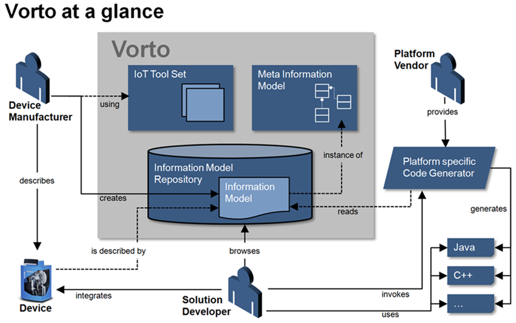
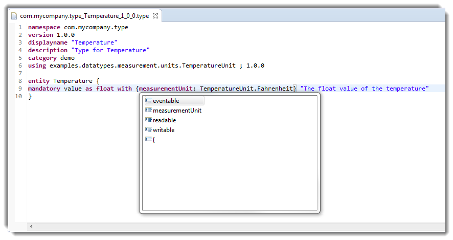
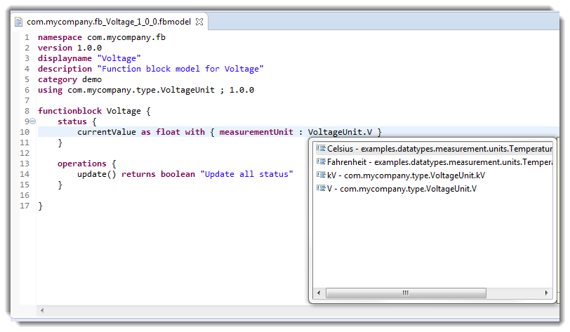
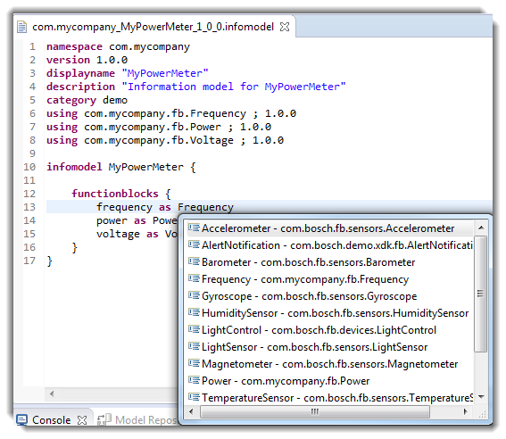
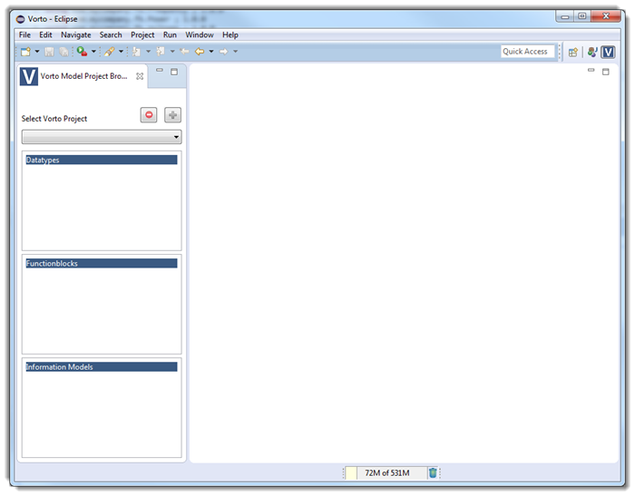
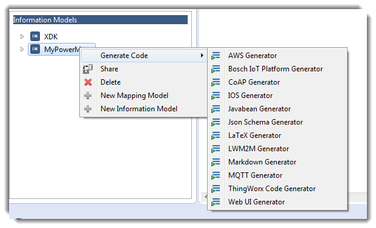

Introduction
This section details the following topics:
Overview
Vorto is an open source tool that allows for creating and managing technology agnostic, abstract device descriptions, so called information models. Information models describe the attributes and the capabilities of real world devices. These information models can be managed and shared within the Vorto repository. In addition Vorto provides a code generator extension point where code generators can be plugged in.
Standardization organizations and industry consortia work hard on device abstraction related standards. Some of them are domain specific, some are very generic, and all of them are useful for a large number of use cases. However in most cases there is no tooling available that allows for creating and managing standard conform device representations. It is also the case that many standards are very complex and it is not easy to validate existing abstract representations of devices against the standard.
The Vorto project is an approach to leverage the standardization of so called Information Models. Information models are abstract representations of real world devices following a meta information model which is also part of the project. The meta information model shall be very flexible and easy to use. In addition, the project scope includes an eclipse based toolset that allows for creating information models, a repository for finding, managing and sharing information models, and last but not least a set of code generators that allow for the creation of information model based code artifacts to be employed in specific solutions.

Features
Vorto allows the user to create the following:
Datatypes
Vorto provides a facility to create a new data type (Entity or Enum). You can use auto-completion and validation to update data types.
Function block model
Vorto provides a facility to create a function block model project containing all necessary resources.
Information model
Information models represent the capabilities of a particular type of device in its entirety. An information model contains one or more function blocks. Vorto allows to create an information model project and all required resources.
Mapping model
Vorto provides a facility to create a mapping model from existing Datatype, Function block, or Information models.
Generate code
Vorto provides a facility to create information model based code artifacts which you can use in specific solutions by choosing a suitable generator from the list of existing generators or allows the user to implement/create his own code generator
DSL editors
The new Domain-specific Language (DSL) is a simple way to define and read datatype models, function block models and information models without the need to understand XML, XSD or even Java. On-the-fly auto-completion and validation lets you create the named models even faster than ever.
- Datatype model DSL editor:

- Function block model DSL editor:

- Information model DSL editor:

- Mapping model DSL editor:
Vorto provides Mapping DSL editor for user to create customized mapping that map a vorto model to another platform model.
Vorto perspective
The Vorto perspective as a new Eclipse perspective simplifies the view and, thus, the work with the more abstract models.

Example code generators
Vorto provides several code generators, so that the user can generate code based on the select information model. Vorto also provides a code generator extension point, so that the user can create his own code generator.

Significant Contribution
The Vorto project considers the following contributions as significant contribution:
- Giving technical input to the Vorto Meta Information Model that leads to an update of the current ecore model.
- Giving input to the project that leads to a high prioritized bug in Github Issues.
- Implementing and contributing a new Vorto code generator to the project.
- Fixing a bug that is considered as critical.
- Implementing a complex feature.
If you satisfy our requirements for significant contribution, email your logo to vorto-dev@eclipse.org to get added to our homepage.
System Requirements
For the use of the Vorto plug-ins the following software requirements must be met:
- IDE
- Eclipse Mars for DSL Developers
- Java 8
| Validity period will endure at the most as long as the version of infrastructure software of third party manufacturers defined in this document (Operating Systems, Java, etc.) is publicly and officially supported. We support the most recent patch releases of the respective software product version. |